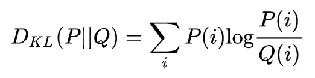
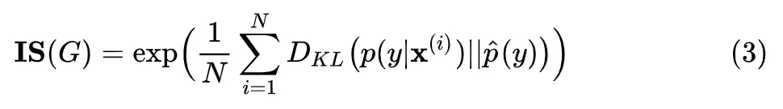
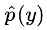
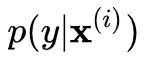

InceptionScore
IS使用两个标准来衡量GAN的性能：
- The quality of the generated images, and
- their diversity.
熵可以看作是对随机性的度量。如果随机变量x的值是高度可预测的，则其熵较低。相反，如果它是高度不可预测的，那么熵就很高。例如，在下图中，我们有两个概率分布p（x）。p2具有比p1更高的熵，因为p2具有更均匀的分布，所以更难以预测x。

质量
在GAN中，我们希望条件概率P（y | x）具有高度可预测性（低熵），比如红色线表示的分布。
（Images that are classified strongly as one class over all other classes indicate a high quality. As such, the conditional probability of all generated images in the collection should have a low entropy. ）
即给定一张图像，我们应该容易地知道对象的类型。因此，我们使用Inception网络对生成的图像进行分类并预测P（y | x），其中y是标签，x是生成的图像数据。这反映了图像的质量（quality ）。
我们的一种直觉是大概率比小概率具有更少的信息
多样性
接下来，我们需要测量图像的多样性。
To capture our interest in a variety of images, we use the marginal probability（边缘概率）. This is the probability distribution of all generated images. We, therefore, would prefer the integral （积分）of the marginal probability distribution to have a high entropy（熵值越高，表明越均匀，也就越不会出现一类独大，其余类出现次数很少的情况）.
P（y）是边缘概率，计算公式如下：


如果生成的图像是多种多样的，则y的数据分布应该是均匀的（高熵）。
下图将这个概念形象化。

These elements are combined by calculating the Kullback-Leibler divergence, or KL divergence (relative entropy), between the conditional and marginal probability distributions.
综合质量与多样性，得到IS计算公式，并计算它
为了结合这两个标准，我们计算它们的KL散度，并使用以下公式计算IS。

公式中各部分可以使用以下方法计算：
$p(y)$ ：N 个生成的图片（N 通常取 5000），每个生成图片都输入到 Inception V3 中，各自得到一个自己的概率分布向量，把这些向量求一个平均，得到生成器生成的图片全体在所有类别上的边缘分布。具体计算时，可以先用生成器生成 N 张图片，然后用$p(y)$的经验分布来代替，经验分布见下面公式 ：

$p(y|x)$ ：把生成的图片 x 输入到 Inception V3，得到一个 1000 维的向量 y ，也就是该图片属于各个类别的概率分布。IS 提出者的假设是，对于清晰的生成图片，这个向量的某个维度值格外大，而其余的维度值格外小（也就是概率密度图十分尖）。
$D_{KL}$：对 $p(y|x)$ 和 $p(y)$ 求 KL 散度。KL 散度离散形式的公式如下：

IS计算公式不直观，可以写成如下的直观形式（应该是基于大数定律：样本足够大时，均值–>期望）：

实际操作中，先用生成的大量样本代入公式 (1)，求出，然后再对每个样本求出，计算它和的 KL 散度，最后求平均，再算一下指数即可。
用numpy实现IS的计算
1 | # calculate inception score in numpy |
1 | 1.0 |
此时假设共生成了3张不清晰（3个向量中，每个向量的3个维度（说明共3个类别）都很接近，熵值较大）的图片，因此IS为1.0（较小）
当我们生成稍微好一些的图片时，再次运行，发现IS值也提高了：
1 | # conditional probabilities for high quality images |
1 | 2.999999999999999 |
（IS最低为1，最高为类别数？）
用Keras内置的Inception V3模型计算IS
在这个例子中，假装已经有了$p(y|x)$，事实上是使用np.ones((50, 299, 299, 3))生成的50假图片喂入Inception V3网络，得到的预测输出概率长向量（长度=类别数）作为$p(y|x)$ （并没有真的把GAN的输出喂入Inception V3去做分类预测得到概率向量）
1 | # calculate inception score with Keras |
Calculate Inception Score for CIFAR-10 in Keras
将CIFAR-10图片当作是生成的图片x，然后喂入Inception V3得到预测输出的概率长向量，即：$p(y|x)$，计算IS
1 | from math import floor |
上面的代码没跑出结果来（因为colab的RAM占满了，可能是cifar10数据集太大？）
应用到GAN
将生成器生成的图片喂入Inception V3网络，预测输出值 ，即概率长向量$p(y|x)$，接下来的步骤与之前相同。
IS的缺点
- 分类模型和生成模型在不同的数据集上训练
由于 Inception V3 是在 ImageNet 上训练的，用 Inception V3 时，应该保证生成模型也在 ImageNet 上训练并生成 ImageNet 相似的图片，而不是把什么生成模型生成的图片（卧室，花，人脸）都往 Inception V3 中套，那种做法没有任何意义。
Inception Score 基于两个假设：
- Inception V3 可以准确估计 p(y)，即样本在所有类别上的边缘分布；
- Inception V3 可以准确估计 p(y|x) ，从而计算出条件熵，用条件熵反映图片的真实程度。
对于假设 1，作者计算了 CIFAR-10 的边缘分布，取了排名前 10 的预测类。把这 10 类和 CIFAR-10 的 10 类相比较，发现，它们并没有对应关系。再一次说明了生成模型的训练数据需要和 Inception Net 或者别的什么分类网络的训练数据一致。不能在一个数据集上训练分类模型，用来评估另一个数据集上训练的生成模型。
对于假设 2，Inception 网络通过 p(y|x) 计算出条件熵，条件熵越低表示生成的图片越真实，这也是有问题的。作者计算了 CIFAR 10 训练集的条件熵是 4.664 bit，而在随机噪声图片上，条件熵是 6.512 bit，仅仅比真实训练集图片高了一点点。
而在 ImageNet 的 validation set上，Inception net 算出的条件熵是 1.97 bit，也就是说 CIFAR 训练数据比起 ImageNet 更接近随机噪声，这显然是不科学的，因为 CIFAR 数据再不济也是真实图片，应该和 ImageNet 的条件熵更接近才对。再一次说明了，不能在一个数据集上训练分类模型，用来评估另一个数据集上训练的生成模型。
- 优化 Inception Score （不直接地&隐式地）
IS的一个缺点是，如果每个类仅生成一张图像，即使多样性并不强，p（y）仍将是均匀的。
Inception Score 只能是粗糙的指导，如果直接优化这个 Inception Score，会导致生成对抗样本（只会刷分，其实并不真实）。但同时也应该注意到，间接地优化这个分数，同样会导致生成对抗样本，例如用这个指标来确定是否停止训练，调整超参数，甚至调整网络架构。
作者在附录中提出了一种可以刷 Inception Score 的方法：把生成样本输入分类模型中，用梯度下降来修改输入的样本，让它在某一类的概率达到非常大，这样，条件熵就降下来了，同时让不同样本优化不同的类，循环遍历所有的类，这样就能保证边缘分布是均匀分布，即生成的图片把每个类都均匀覆盖了。但是，这会导致生成毫无意义的图片。
- 没有反映过拟合
根据 Inception Score 的计算原理，我们可以发现：如果神经网络记住了所有的训练集图片，然后随机输出，那么它会得到一个很高的 Inception Score。但是这种生成模型是没有意义的。
因此在用 Inception Score 评估生成模型的性能时，应该加上别的指标，证明模型没有过拟合，即模型输出的图片和训练集中任何图片都不同，单纯用 Inception Score 评估性能是不全面的。
参考资料
https://medium.com/@jonathan_hui/gan-how-to-measure-gan-performance-64b988c47732